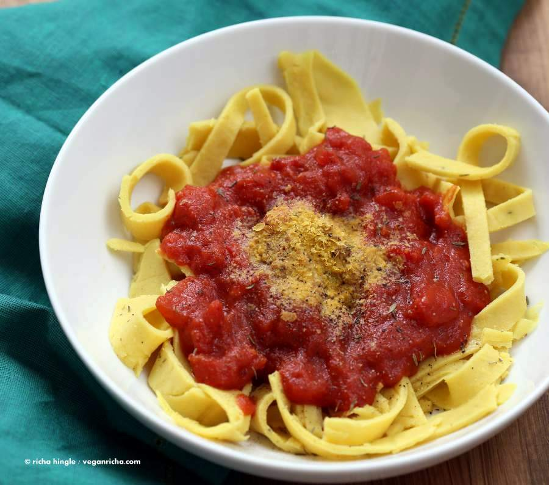

Odin Recipes - Noodles

Ingredients
- 200g chickpea noodles
- 1 can of chopped tomatoes
- 1 onion
- 2 cloves of garlic
- 1 tsp dried oregano
- 1 tsp dried basil
- Salt and pepper to taste
- Olive oil
- Fresh basil for garnish (optional)
Instructions
- Cook the chickpea noodles according to the package instructions. Drain and set aside.
- In a large pan, heat a tablespoon of olive oil over medium heat. Add the chopped onion and cook until translucent, about 5 minutes.
- Add the minced garlic and cook for another minute until fragrant.
- Pour in the can of chopped tomatoes, and add the dried oregano and basil. Stir well to combine.
- Let the sauce simmer for about 15-20 minutes, stirring occasionally. Season with salt and pepper to taste.
- Once the sauce has thickened, add the cooked chickpea noodles to the pan and toss to coat them evenly with the sauce.
- Serve hot, garnished with fresh basil if desired.
Home